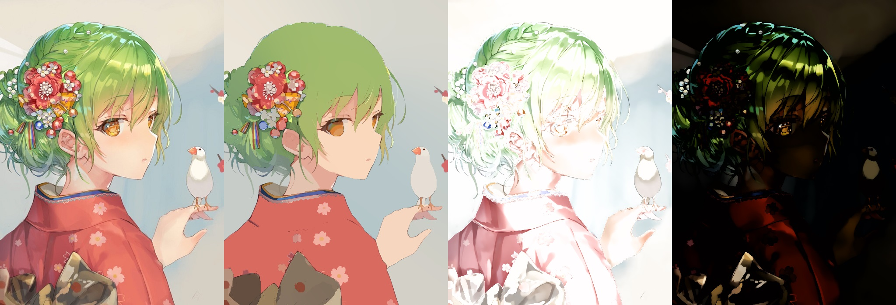

Erasing Appearance Preservation in Optimization-based Smoothing
European Conference on Computer Vision (ECCV) 2020 (Spotlight)

A fine-tuned result from the Erasing Appearance Preservation (EAP) framework with L1 smoothing. In this example, our EAP framework decomposes the left image and outputs the flat color layer, the shadow layer, and the specular reflection layer from an illustration.
Abstract
Optimization-based image smoothing is routinely formulated as the game between a smoothing energy and an appearance preservation energy. Achieving adequate smoothing is a fundamental goal of these image smoothing algorithms. We show that partially "erasing" the appearance preservation facilitate adequate image smoothing. In this paper, we call this manipulation as Erasing Appearance Preservation (EAP). We conduct an user study, allowing users to indicate the "erasing" positions by drawing scribbles interactively, to verify the correctness and effectiveness of EAP. We observe the characteristics of human-indicated "erasing" positions, and then formulate a simple and effective 0-1 knapsack to automatically synthesize the "erasing" positions. We test our synthesized erasing positions in a majority of image smoothing methods. Experimental results and large-scale perceptual human judgments show that the EAP solution tends to encourage the pattern separation or elimination capabilities of image smoothing algorithms. We further study the performance of the EAP solution in many image decomposition problems to decompose textures, shadows, and the challenging specular reflections. We also present examinations of diversiform image manipulation applications like texture removal, retexturing, intrinsic decomposition, layer extraction, recoloring, material manipulation, etc. Due to the widespread applicability of image smoothing, the EAP is also likely to be used in more image editing applications.
Files
See Also
- Source Code - Core smoothing algorithm only, version 0.1, several Matlab files. User interface not included. Licensed by Style2Paints for noncommercial research use only.
- Supplementary Document - A document of some additional exposition and engineering details.
Citation
Lvmin Zhang, Chengze Li, Yi JI, Chunping Liu, and Tien-tsin Wong.
"Erasing Appearance Preservation in Optimization-based Smoothing."
European Conference on Computer Vision (ECCV), May 2020.
BibTeX
@InProceedings{EAP2020,
author={Lvmin Zhang, Chengze Li, Yi JI, Chunping Liu, and Tien-tsin Wong},
booktitle={European Conference on Computer Vision (ECCV)},
title={Erasing Appearance Preservation in Optimization-based Smoothing},
year={2020},
}